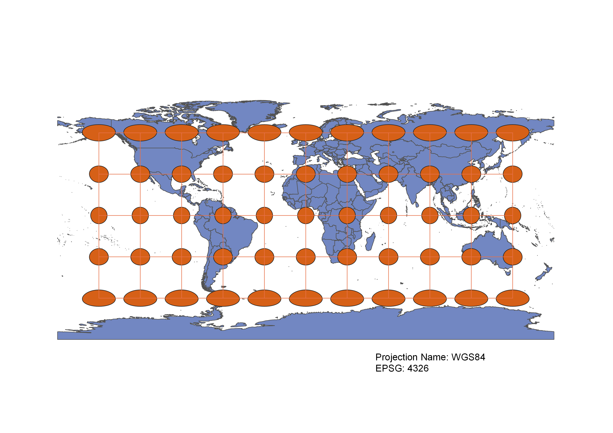
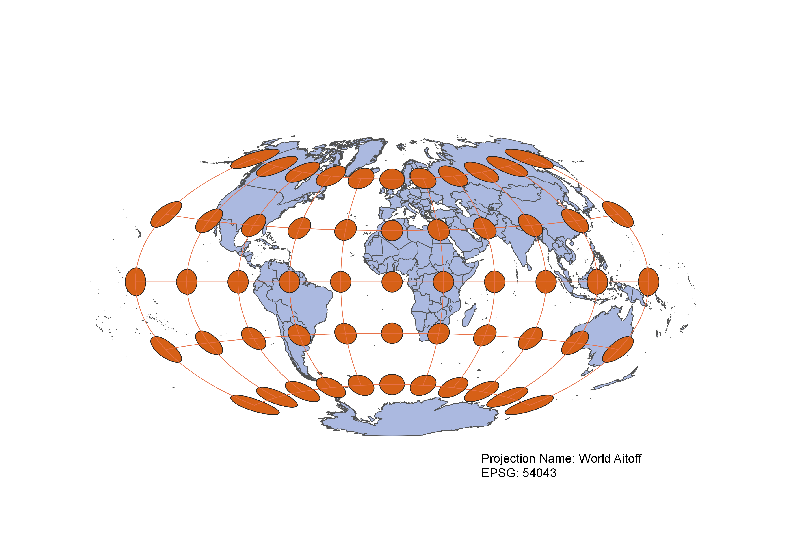
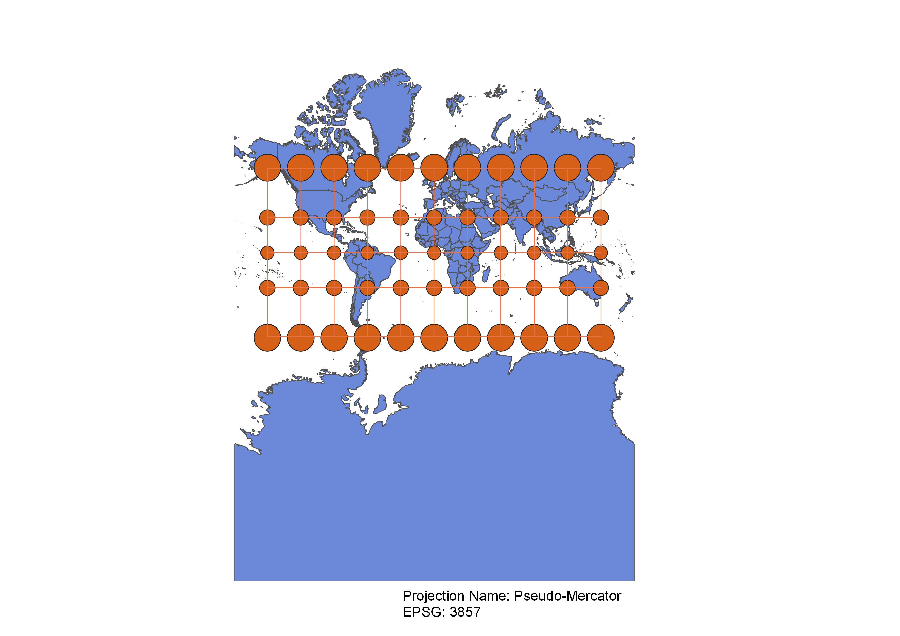
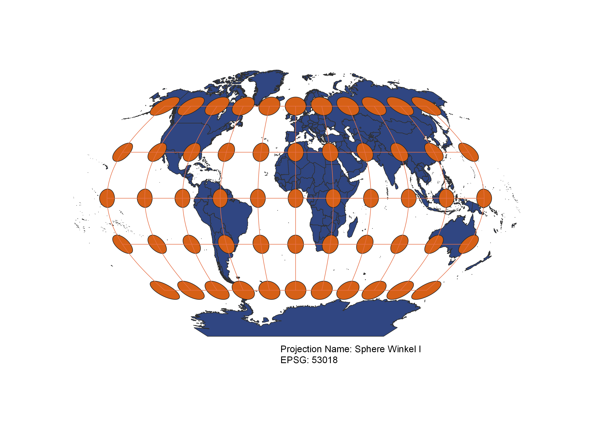
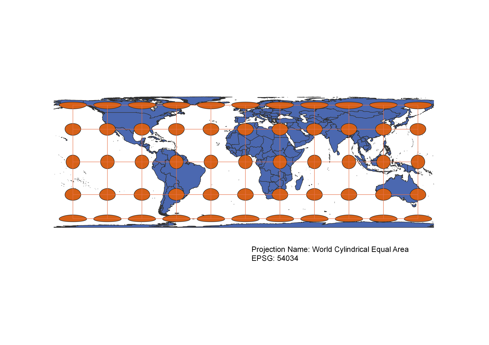
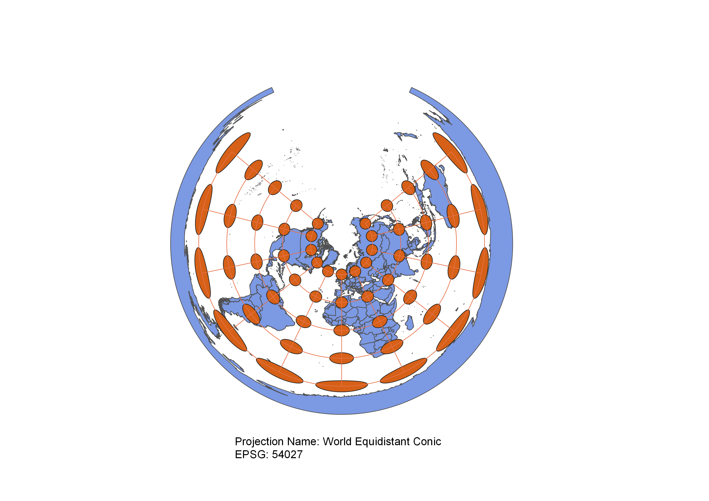
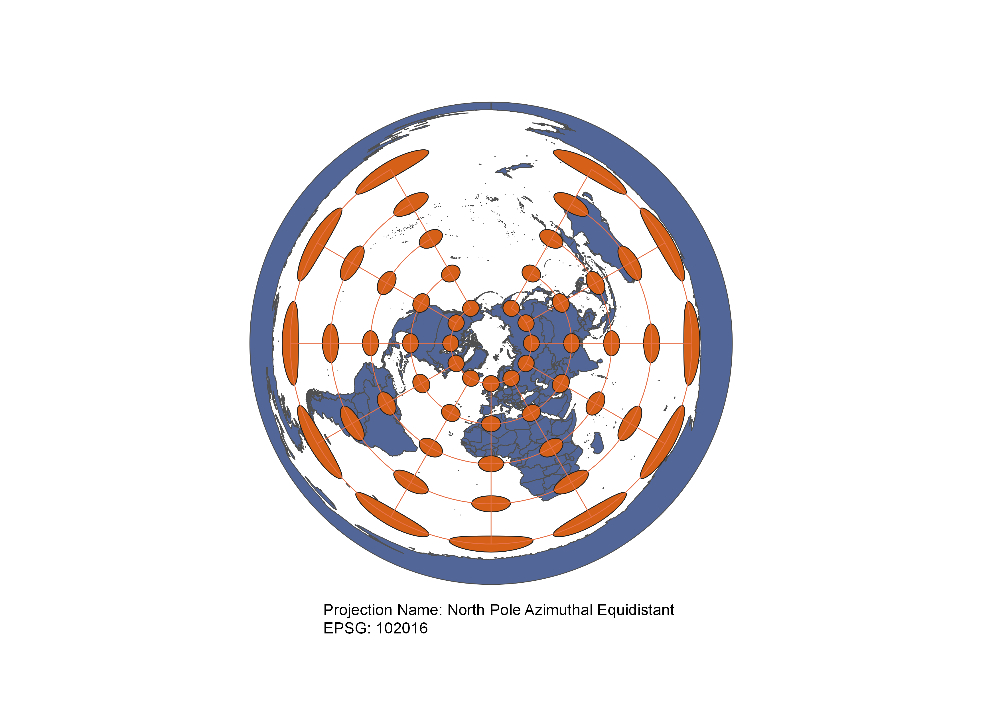
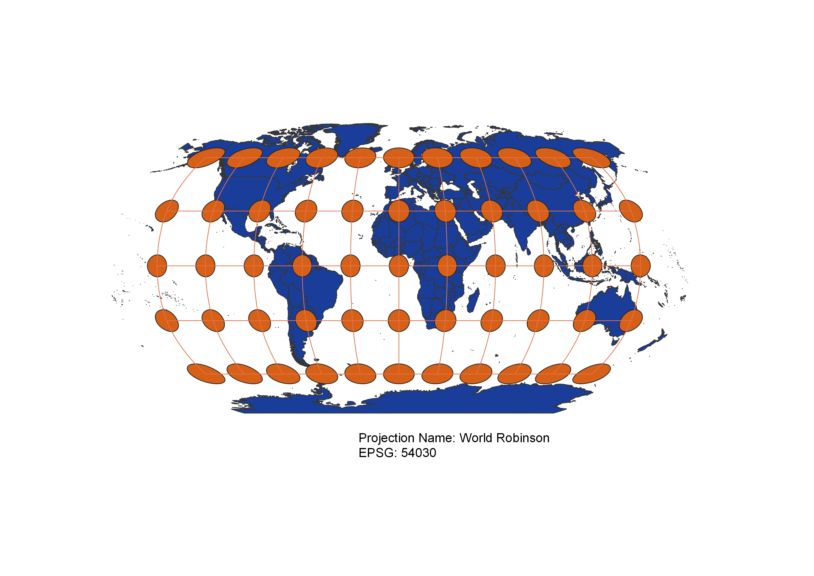
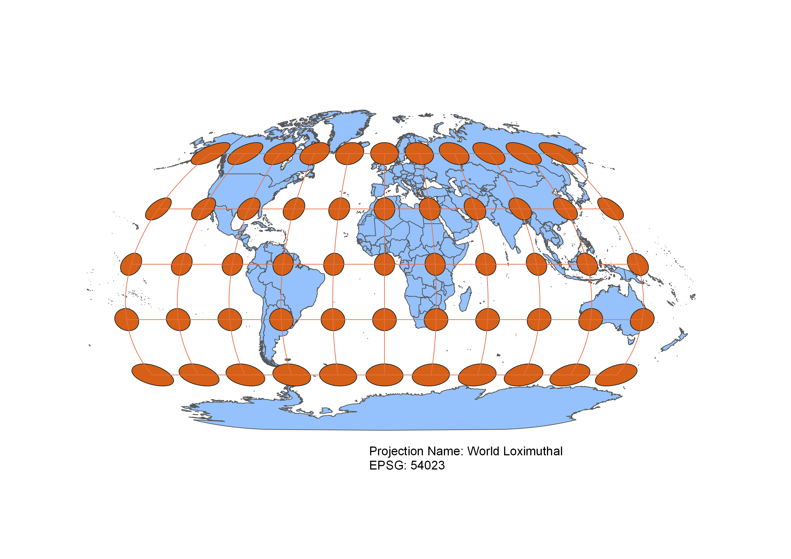

In this project I learned how to display images in different projections
Displaying the map in different projections using QGIS
In this project I displayed the map in different projections by using information provided by ESRI in QGIS. I first added a vector layer into QGIS by uploading the countries shape file. This vector layer displayed a map that I could manipulate in QGIS by using different projection. I then clicked on the ESRI button in the bottom right corner to pull up a list of different coordinate reference systems. In order to display the map in a different projection, I selected one coordinate reference system and clicked okay to apply it to the map. Once I applied a coordinate reference system to the map, I created a label for it and converted it into a png file to display on my website. I repeated this process multiple times, but with a different coordinate reference system for each map. Ultimately, I created nine different maps that each were displayed with a different projection.
WGS84 Projection
This projection seems to preserves direction and distance. All of the cirlces are oriented vertically in a north-to-south direction. In addition, distance is very well preservd in that all of the rectangles between the circles appear to be the same size. However, it seems to distort area and shape. The circles closer to the map are not only larger than the circles near the equator, but they are also wider and appear more flat or squished down.

Aitoff Projection
This projection of the map appears to have many distortions. The most apparent distortion is direction. The circles in the souther atmosphere are pointing outwards while the circles in the northern hemisphere are point inwareds. In addition, there is a distortion of area and shape. The circles farthes away from both the central meridian and the equators are larger and seem more squished vertically.

Pseudo-Mercator Projection
In general, this projection appears to preserve many features of the map. The projection clearly preserves shape in that all of the circles appear to be well rounded circles with minimal-to-no squishing or flattening. In addition, this projection preserves direction. All of the circles are directed vertically, north to south. Distance is also well preserved near the equator and the rectangles between the circles, and thus distance, is only moderately affected near the poles. Unfortunately, this projection distorts area. The circles closest to the northern and southern poles are much larger than the circles near the equator.

Sphere Winkel I Projection
This projection seems to display minimal distortion across all of the features of the map. The projection slightly distorts area in that the circles near the northern in southern poles are minimally larger in size compared to the circles near the equator. In addition, this projection moderately distorts shape. The circles near the equator or slightly flattened vertically while the circles near the poles have a more circular, rounded shape. The projection also distorts direction. The circles in the southern hemispherely slightly point outwards while the circles in the norther hemisphere slightly point inwards. Overall, this projection preserves distance in that the area is generally the same size between all of the circles. The distance is slightly distorted near the poles, but it is not extreme.

World Cylindrical Equal Area Projection
This projection seems to preserve area and also direction quite well. Based off the name of the projection and verified by the map, this projection appears to preserve area quite well. The map also preserves direction moderately well in that all of the circles are directed vertically in a north to south direction. Unfortunately, this projection evidently distorts shape. The circles closes to the northern and southern poles are quite severely squished and flattened horizontally.In addition, distance becomes quite distorted near the poles.

World Equidistant Conic Projection
This projection appears to preserve direction very well. All of the circles are oriented vertically in a north-to-south direction along the map. Unfortunately, this projection moderately distorts both area and shapes. The circles in the northern pole are small and have a circular, rounded shape. However, as you move down to the southern poles, the circles increase in size and have a flatter, more horizontally swuished shape.

North Pole Azimuthal Equidistant Projection
This projection has moderate-to-sever distortions. The most apparent distortions are distortions of both size and shape. Similar to the World Equidistanct Conic Projection, circles near the northern poles are more small and round in shape while the circles near the southern pole are much larger and more squished and flattened horizontally in shape. Meanwhile direction and distance are preserved for the most part. All off the circles are oriented vertically in a north-to-south direction.

World Robinson Projection
This projection has minimal distortions acorss all of the features. Shape is moderately distorted in that the circles in the northern and southern poles are somewhate wider than the circles near the equator. In addition, size is distorted. The circles farthest away from the equator and near the poles are slightly larger than the equators near the equator. Direction is mostly preserved but the circles in the southern hemisphere slightly point outward while the circles in the norther hemisphere lsightly point inward. For the most part, distance is preserved in which the area betwen all of the poles appear to be the same size for the most part.

World Loximuthal Projection
This projection has moderate distortions among all of the features. Size and shape are both moderately distorted in that the circles closer to the poles are both larger in size and wider. Meanwhile, direction is slightly distorted. The circles the near the equator and central meridican are oriented vertically in a north-to-south direction. However circles that are farther away from both the equator and the central meridian are pointed either inwards or outwards. For the most part, distance also seems to be preserved in that all of the rectangles between the circles appear to be the same size.

Now, you should add the following projections on your own:
EPSG: 3857, 53018, 54034, 54027, 102016, and two additional projections that you choose.
Data used for this project
Download Natrual Earth 1:10m Cultural Vector